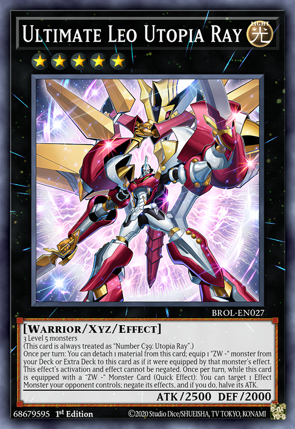
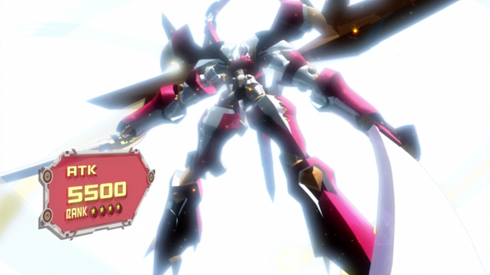
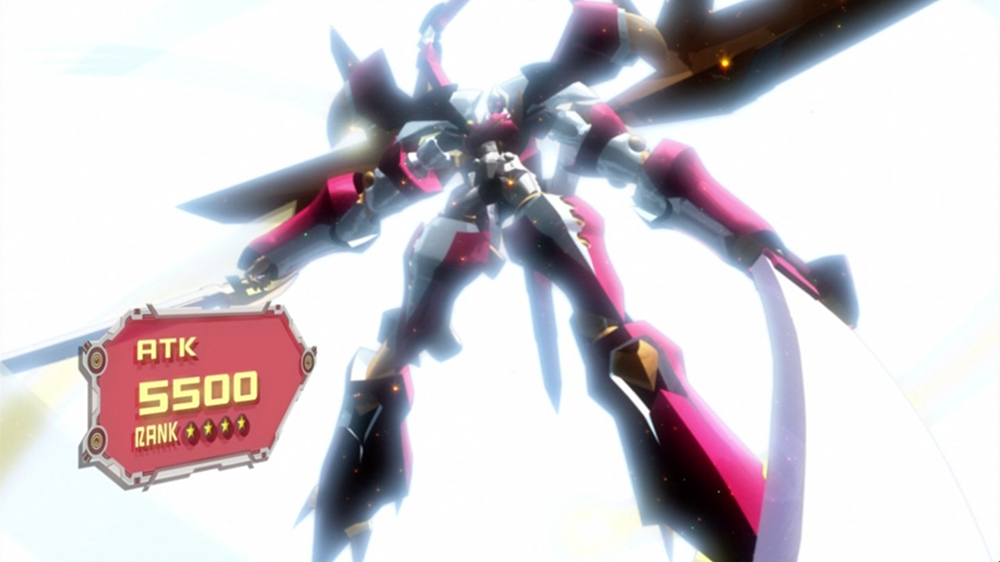

Ultimate Leo Utopia Ray being summoned for the first time

Ultimate Leo Utopia Ray being summoned for the first time
Ultimate Leo Utopia Ray
The third form of Utopia and the first evolution of Utopia Ray, he debuted in episode 67 of Yu-Gi-Oh! Zexal on August 13th, 2012.Just like with Utopia Ray, while Ultimate Leo's bio says you need 3 level 5 monsters to summon him, you could also use a rank up card to evolve base Utopia to Ulitmate Leo Ray.
Ulitmate Leo Utopia Ray was summoned as one of Yuma and Astral's (fused together as ZEXAL) final moves before winning against the villain Vetrix (Tron in Japanese). Leo Utopia Ray shows the strengh Yuma and Astral had to win despite all odds going against them.
Ultimate Leo Utopia Ray's design shows him wearing even bigger armor with gold and white coming back as the base colors with the additonal red. He looks less heavy then his last from; Utopia Ray, with how his armor is formatted this Utopia looks very similar to ZEXAL form 1. Ulitnate Leo gained even bigger wings with new twin swords and a huge sword to match.
"The raging impact from the warrior's golden armor will shake the ground! Blitz of Lightning! Grant the warrior the strength of a God slayer! Beast-Armor fusion! Lion Hope Ray!"
-Yuma and Astral's Japanese summoning chant for Ultimate Leo Utopia Ray